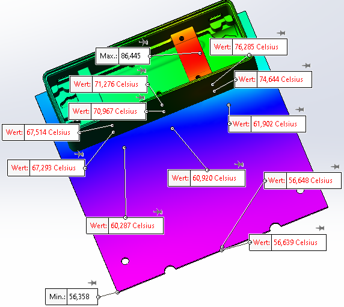
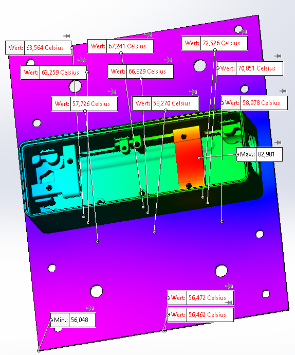
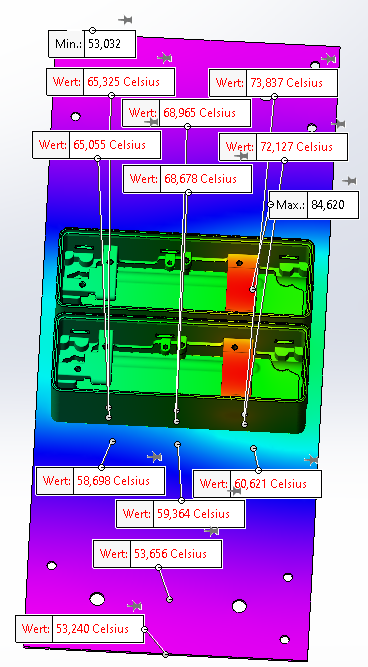

O3R ODS heat dissipation guidelines
O3R VPU specifications
The O3R VPU IPCs mean power consumption is dependent on its processing load: Typical load cases
Load |
Power consumption |
Description |
|---|---|---|
VPU only - no load |
310 mAmps @ 24 V = 8 W |
For a system at IDLE conditions and no O3R camera heads connected |
VPU only - minimal load |
400-500 mAmps @ 24 V = 10 - 12 W |
For a system close to IDLE conditions |
VPU heavy load - including O3R cameras |
1.2 - 1.5 Amps @ 24 V = 30 - 40 W |
For a system under heavy load conditions |
Please see the formula as written in the data sheet to get a better understanding of the shared power consumption:
Max. current consumption [mA] = 2710; 310 + (n x 800), n = number of cameras
This power consumption is shared between the VPU power consumption and the O3R camera heads power consumption.
O3R VPU
The expected maximum thermal energy output of a VPU under full load is about 15 W, a typical thermal energy output of the system is between 7.5 W to 15 W.
O3R camera head specifications
O3R222 camera head specification
O3R225 camera head specification
Each ifm O3R camera head has a thermal energy power output of about 8 W under full load - i.e. at maximum framerate.
Heat dissipation via heat sinks
The thermal energy output of the system components, as described above, needs to distributed: This includes:
A heat sink and mounting bracket for the VPU device
A combined heat sink and mounting bracket per O3R camera head
VPU heat sink
The VPU heat sink design can be fairly minimal. As long as the VPU is rigidly connected, with enough clamping force - screwed down, on the bottom side to a heat dissipating material, i.e. larger metal plate, the energy flow from the housing into the mounting plate and heat dissipation via air convection around the housing will be adequate under all load scenarios.
For inadequate mounting solutions, i.e. high heat dissipating resistors - e.g. air gaps between the mounting surfaces, the internal temperatures will exceed normal operation conditions and the CPU and GPU will be “clocked-down”.
Temperature gradient for O3R camera heads: inside outside temperatures
Heat sink design
Examples heat sink tests and simulations for the ifm O3R camera head:
Simulation boundary values |
value |
|---|---|
Maximum internal temperature (measured during tests) |
80 °C |
Maximum internal temperature (used during simulation) |
hotspot temperature 85 °C |
Maximum Ambient temperature |
40 °C |
Heat sink materials tested |
Aluminum AW 5754 und Steel 1.4301 |
Thermal energy input by the O3R camera head |
8W |
Based on the boundary values above a set of thermal energy dissipation simulations were performed:
Simulation design:
The camera head(s) are connected to a bracket material of different size and material using the mounting threads with screws at the back of the housing
The camera head(s) are positioned at different locations on the bracket material to test energy conduction and transfer capabilities of the bracket:
Different maximum temperatures and thermal energy distributions
Different thermal energy conduction inside the mounting bracket material
Simulation outcome:
Simulation test results are comparable to real world measurements - i.e thermal imaging measurements
For comparability the simulation results had to be increased by +5 °C for the maximum internal temperature, i.e. hotspot temperature
Real world testing: maximum internal camera head temperature: 80 °C
Simulation testing: maximum internal camera head temperature: 85 °C



Simulation and testing results:
The simulation results show that per O3R camera head a heat dissipating aluminum bracket area of 1200 cm² is required to allow for enough energy transfer via heat convection. The ambient temperature for all tests was assumed to be 40 °C as stated in the manual.
Thermal energy distribution inside the mounting bracket only has a minor impact on the heat transfer as long as “good” energy distribution from inside the camera head to the complete surface of the bracket can be assumed. Aluminum material is preferable as is has a lower heat conduction resistance.
Bracket material thickness can be neglected. Aluminum brackets with a thickness of 1 mm - 2 mm are sufficient to transfer the thermal energy over the required heat sink area.
Theory of heat sink design :
When designing a an appropriate heat sink for a O3R hardware please consider the following points:
Thermal barriers / thermal resistance
Thermal capacity
Heat dissipation via
heat convection
heat conduction
radiation
Heat sink design involves determining the appropriate size and shape of the heat sink based on the amount of heat that needs to be dissipated and the available space for the heat sink. The design must also take into account factors such as the thermal conductivity of the heat sink material, the airflow around the heat sink, and the thermal resistance between the component and the heat sink.
There are several types of heat sinks available, including passive heat sinks, which rely on natural convection to dissipate heat, and active heat sinks, which use fans or other mechanical means to enhance heat dissipation. Passive heat sinks are simpler.
Thermal barriers / thermal resistance To use a heat sink, it must be mounted directly onto the component that generates heat: using a thermal interface material, such as thermal paste or thermal pads is advised if it can be integrated into the final assembly process. The thermal interface material helps to fill in any gaps between the component and the heat sink, ensuring maximum heat transfer.
Heat transfer resistance, between the two components - mounting surfaces, can be determined using the following formula:
R = ΔT / Q
where R is the thermal resistance (in °C/W), ΔT is the temperature difference between the hot and cold sides of the component (in °C), and Q is the heat dissipated by the component (in W).
To calculate the heat dissipated by a component, you can use the formula:
Q = I²R
where Q is the heat dissipated (in W), I is the current flowing through the component (in A), and R is the resistance of the component (in Ω).
Once you have determined the thermal resistance of the component, you can use it to calculate the temperature rise of the component under different operating conditions. For example, if you know the ambient temperature and the heat dissipated by the component, you can calculate the temperature rise of the component as:
ΔT = Q x R
where ΔT is the temperature rise (in °C), Q is the heat dissipated (in W), and R is the thermal resistance (in °C/W).
Thermal energy dissipation via air convection
Heat transfer by air convection can be determined by using the following formula:
Q = hA(Ts - T∞)
where Q is the rate of heat transfer, h is the convective heat transfer coefficient, A is the surface area of the object, Ts is the temperature of the object’s surface, and T∞ is the temperature of the air surrounding the object.
The convective heat transfer coefficient, h, for air convection depends on several factors, including the properties of the air, the velocity of the air, the shape and orientation of the object, and the temperature difference between the object and the air. The convective heat transfer coefficient can be calculated using empirical correlations or experimental data.
Two cases are distinguished:
natural convection (i.e., where air motion is driven solely by temperature differences)
forced convection (i.e., where air motion is generated by a fan or other mechanical means)
Thermal energy dissipation via heat conduction and thermal energy capacity
Heat dissipation via heat conduction is the transfer of heat from a region of high temperature to a region of low temperature through a medium or material. Heat conduction occurs when there is a temperature gradient within the material, meaning that the temperature varies across the material in space. The direction of heat flow is always from higher temperature to lower temperature, and the rate of heat transfer is proportional to the temperature difference.
This works as long as there is potential difference between different parts of the heat sink. Once the heat sink has reached a equilibrium state no additional energy can be dissipated away from the source anymore. For this reason heat dissipation via conduction is only a short term solution. Rather then optimizing heat sinks and mounting designs for larger mass, i.e larger capacity, optimize for surface area to allow for energy transfer via air convection.
Thermal energy dissipation via radiation
Thermal energy dissipation via radiation can be determined using the Stefan-Boltzmann Law, which relates the amount of energy radiated by an object to its temperature and surface area. The law states that the power emitted per unit area by a blackbody:
P = σ * A * T^4
where:
P is the power emitted per unit area,
σ is the Stefan-Boltzmann constant (5.67 x 10⁻⁸ W/m²*K⁴),
A is the surface area of the object, and
T is the absolute temperature in Kelvin.
The law can still be used for not perfect blackbodies by introducing an emissivity factor, which takes into account how well the object absorbs and emits radiation relative to a perfect blackbody. The formula becomes:
P = ε * σ * A * T^4
where:
ε is the emissivity factor, which ranges from 0 to 1.
As can be seen from the formulas above the energy dissipation via conduction is proportional to the fourth power of its absolute temperature. For this reason is can be disregarded.